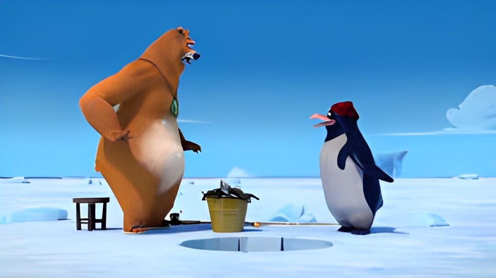

About Grizzy
Grizzy is awesome! He's a cartoon character who fights against lemmings to prove he is a good guy.
Grizzy and his friend
Grizzy Characteristics
- He's got a house.
- He tries to get everything in his power.
- He's trying to be a good guy.
Grizzy Friends
Grizzy has some awesome friends. I think his best friend is Baby Raccoon. He is very cute. Click on the links below to read more about them: